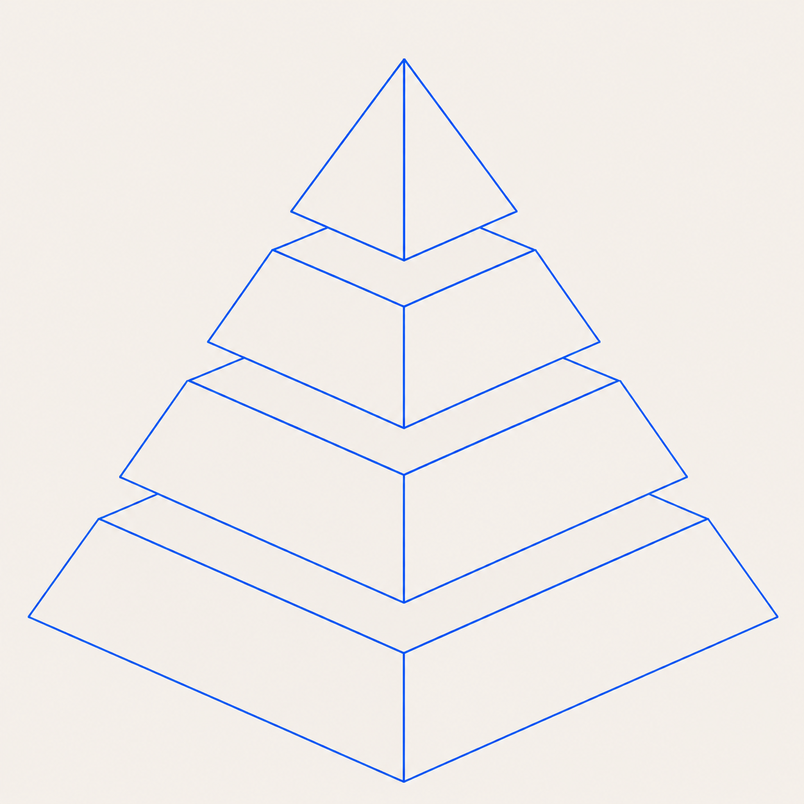

STMA

Acidentes Graves ou Fatais
...
Acidentes Leves (Com ou Sem Afastamento)
...
Quase Acidentes (Near Miss)
...
Desvios Registrados (Atos e Condições Inseguras)
...
TOTAL DESVIOS
CLASSIFICAÇÃO DESVIOS GRAVES
DESVIOS GRAVES
AÇÕES DESVIOS GRAVES
DESVIOS NO MÊS VIGENTE